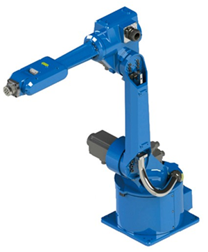
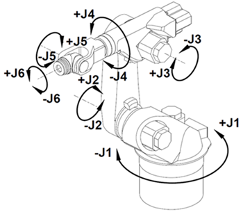

1.1了解工业机器人
1.1.2 工业机器人的组成
工业机器人由本体、驱动系统和控制系统三个基本部分组成。本体即机座和执行机构，包括臂部、腕部和手部，有的机器人还有行走机构；驱动系统包括动力装置和传动机构，用以使执行机构产生相应的动作；控制系统是按照输入的程序对驱动系统和执行机构发出指令信号，并进行控制。下面以HSR-612工业机器人为例来说明，如图1-1所示。

图1-1 HSR-612工业机器人
工业机器人本体一般采用空间开链连杆机构，其中的运动副（转动副或移动副）常称为关节，关节个数通常即为机器人的自由度数，大多数工业机器人有3～6个运动自由度。根据关节配置型式和运动坐标形式的不同，机器人执行机构可分为直角坐标式、圆柱坐标式、极坐标式和关节坐标式等类型。出于拟人化的考虑，常将机器人本体的有关部位分别称为基座、腰部、臂部、腕部、手部（夹持器或末端执行器）等。
图1-2所示为一典型的6轴工业机器人，J1、J2、J3为定位关节，机器人手腕的位置主要由这三个关节决定；J4、J5、J6为定向关节，主要用于改变手腕姿态。

图1-2 6轴工业机器人
工业机器人驱动系统的作用是提供动力給执行元件，驱动系统的传动有液压、气动、电动三种类型，HSR-612工业机器人采用电动伺服驱动方式（交流电机），采用一个关节（轴）一个驱动器。该驱动装置采用位置传感器、速度传感器等传感装置来实现位置、速度和加速度的闭环，不仅能提供足够的功率来驱动各个轴，而且能实现快速而频繁的启停精确地到位和运动。
HSR-612工业机器人其传动结构臂部采用RV减速器，腕部采用谐波减速器。
HSR-612工业机器人控制系统主要由HTP 机器人示教器以及运行在设备上的软件所组成。机器人控制器一般安装于机器人电柜内部，控制机器人的伺服驱动、输入输出等主要执行设备；机器人示教器一般通过电缆连接到机器人电柜上，作为上位机通过以太网与控制器进行通讯。借助HTP示教器，用户可以实现HSR-612工业机器人控制系统的主要控制功能：
（1）手动控制机器人运动；
（2）机器人程序示教编程；
（3）机器人程序自动运行；
（4）机器人运行状态监视；
（5）机器人控制参数设置。